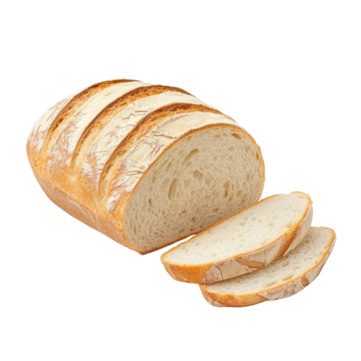

Pão caseiro de modo prático
Aprenda os ingredientes e preparos
Criado por Lucas Eduardo P. da Cruz

INGREDIENTES
- Farinha de trigo
- Envelopes de fermento biológico seco ou tabletes do fresco
- Xicára (chá) de açucar
- Colher (sopa) de sal
- Ovos
- Xicára (chá) de banha derretida ou óleo (125 ml)
- Xicára (chá) de leite + a mesma medida de água (leve ao fogo para amornar)
- 1 gema sem película levemente batida com 1 a 2 colheres (sopa) de leite para pincelar (opcional)
MODO DE PREPARO
-
Misture a farinha (reserve um pouco para dar o ponto) com o fermento (se usar o fresco, dilua no açúcar).
- Abra uma cova no centro, adicione o açúcar, o sal, os ovos e o óleo e misture (só o centro).
- Acrescente o leite com água e misture até a massa ficar pesada.
- Transfira para uma superfície enfarinhada e amasse por cerca de 1 minuto (não precisa sovar),
acrescentando mais farinha se necessário, até desgrudar das mãos, mas ainda permanecer úmida (não deixe muito seca).
- Cubra e deixe crescer até dobrar o volume.
- Divida a massa em 3 porções, modele os pães (abrindo com o rolo e enrolando como rocambole) e disponha em assadeira, mantendo espaço entre eles (se preferir, use fôrmas de pão untadas e enfarinhadas)
- Cubra e deixe crescer até dobrar o volume
- Pincele a gema com leite, se desejar, e leve ao forno médio a 160 °C (não precisa preaquecer).
- Após 5 minutos, aumente a temperatura para 180 °C e asse por mais uns 25 minutos ou até dourarem.
Após todos esses processos, aproveite da melhor forma o seu delicioso pão caseiro